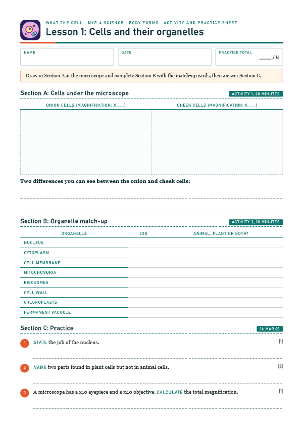

By the end of the lesson you can
- Identify the parts of animal and plant cells
- State the job of each organelle
- Compare animal and plant cells
- Use a light microscope to look at cells
Keys: arrows or a presentation clicker move the slides, F for full screen. Slides with a red dot have a video or simulation.
Videos (all 5 minutes or less)
- 3:16
Intro to cells: animals and plants
FuseSchool. While you watch: Which organelles do animal and plant cells share? Slide 13.
Simulations
- Lab
- Lab
Print and practise

Activity and practice sheet
Used in the lesson’s activities, with practice questions. Your teacher has the answers.
Download (PDF)Lesson 1 slides
All 20 slides in one file, to read again or print. The video buttons on the slides open YouTube.
Download the slides (PDF)Revising? The Revision tab on the unit page has the unit notes and review.
Class activity pack
Everything to print for the lesson’s activities: picture cards, sorting mats, station cards with their kit lists, and the teacher’s set-up notes. Print it before class.
Download the activity pack (PDF)Notes: Cells and their organelles
cell
The smallest unit of life; all living things are made of cells. For example: you have about 37 trillion.
organelle
A small part inside a cell with its own job. For example: the nucleus.
nucleus
Holds the DNA and controls the cell. For example: the dark spot in a stained cell.
cell membrane
Thin layer around the cell that controls what goes in and out. For example: around every cell.
cell wall
Strong layer of cellulose outside a plant cell membrane. For example: gives a plant cell its shape.
chloroplast
Where photosynthesis happens in plant cells. For example: the green dots in a leaf cell.
Key words
| cell | the smallest unit of life |
|---|---|
| organelle | a part inside a cell with its own job |
| nucleus | controls the cell; holds DNA |
| cell membrane | controls what enters and leaves |
| mitochondria | release energy by respiration |
| cell wall | supports a plant cell |
| chloroplast | site of photosynthesis |
| magnification | how many times bigger the image is |